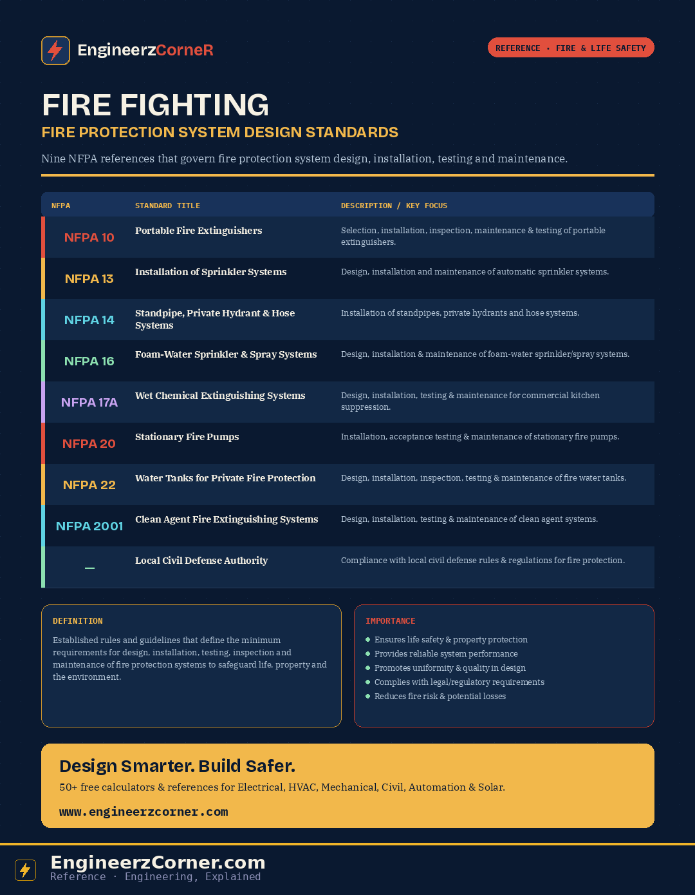

Fire protection system design standards are established rules and guidelines that define the minimum requirements for the design, installation, testing, inspection, and maintenance of fire protection systems and equipment to safeguard life, property, and the environment from fire hazards. Each system type — extinguisher, sprinkler, hydrant, foam, kitchen suppression, pump, tank, clean agent — sits under its own NFPA number. Here's what each one actually covers.

NFPA fire protection system design standards, at a glance.
NFPA standards reference table
| NFPA | Standard title | Description / key focus |
|---|---|---|
| NFPA 10 | Portable Fire Extinguishers | Selection, installation, inspection, maintenance and testing of portable fire extinguishers. |
| NFPA 13 | Installation of Sprinkler Systems | Design, installation and maintenance of automatic sprinkler systems. |
| NFPA 14 | Standpipe, Private Hydrant & Hose Systems | Installation of standpipe systems, private hydrants and hose systems. |
| NFPA 16 | Foam-Water Sprinkler & Foam-Water Spray Systems | Design, installation and maintenance of foam-water sprinkler and foam-water spray systems. |
| NFPA 17A | Wet Chemical Extinguishing Systems | Design, installation, operation, inspection, testing and maintenance of wet chemical extinguishing systems — commercial kitchen hoods and cooking equipment. |
| NFPA 20 | Installation of Stationary Pumps for Fire Protection | Installation, acceptance testing and maintenance of stationary fire pumps. |
| NFPA 22 | Water Tanks for Private Fire Protection | Design, installation, inspection, testing and maintenance of water tanks for private fire protection. |
| NFPA 2001 | Clean Agent Fire Extinguishing Systems | Design, installation, operation, inspection, testing and maintenance of clean agent fire extinguishing systems. |
| — | Local Civil Defense Authority | Compliance with local civil defense rules and regulations for fire protection systems, alongside NFPA. |
What each standard actually governs
Governs extinguisher type selection by hazard class, mounting height and travel distance, plus the recurring inspection, hydrostatic testing and recharge intervals that keep them serviceable.
The core sprinkler design standard — hazard classification, hydraulic calculation, pipe sizing, spacing and coverage rules that every automatic sprinkler installation is built against.
Covers wet and dry standpipes, hose cabinets, landing valves and private yard hydrants — the manual firefighting connections used by occupants or the fire brigade on each floor and around the site.
Combines water sprinklers with foam concentrate injection for hazards where water alone isn't enough — typically flammable liquid storage, loading areas and high-hazard occupancies.
Commercial kitchen hood suppression — the wet chemical agent, nozzle placement over cooking appliances, and fuel/power shutoff interlocks required for grease and cooking-oil fires.
Governs jockey, electric and diesel-driven fire pump selection, sizing, controller requirements and acceptance testing — the standard behind the pump room on every water-based system.
Sizing, construction, and maintenance of gravity, suction and pressure tanks that supply the fire water reserve — ensuring the stored volume actually sustains the design duration.
Gaseous clean agent suppression — server rooms, electrical vaults, archives — where water damage isn't acceptable and the agent must extinguish without leaving residue.
General notes
- ✓All systems shall be designed in accordance with the latest edition of the applicable NFPA standard — editions get revised, so confirm which one the project's governing code references.
- ✓Local civil defense / fire authority regulations shall also be followed wherever applicable — these can add requirements on top of the NFPA base standard.
- ✓Regular inspection, testing and maintenance are essential to ensure continuous reliability — a system that passed acceptance testing still needs ongoing upkeep to stay compliant.
- ✓Documentation and records must be maintained as per standard requirements — inspection tags, test reports and maintenance logs are part of compliance, not paperwork on the side.
Key takeaways
- ✓Nine references cover the full spread of fire protection design: extinguishers (10), sprinklers (13), standpipes/hydrants (14), foam (16), kitchen suppression (17A), pumps (20), tanks (22), clean agent (2001), plus local civil defense compliance.
- ✓NFPA sets the minimum design, installation and maintenance requirements — the actual system selection still depends on project-specific hazard analysis.
- ✓Compliance is ongoing, not a one-time acceptance test — every standard here also governs recurring inspection, testing and documentation.
- ✓Adhering to NFPA standards and local regulations ensures effective fire protection, enhances safety, and provides peace of mind through reliable and compliant fire protection systems.